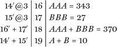
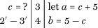

Seeing and Knowing
“You see but you do not observe.”
—SHERLOCK HOLMES
THIS CHAPTER IS ABOUT VISION. OF COURSE, EYES AND VISION ARE not unique to humans—not by a long shot. In fact, the ability to see is so useful that eyes have evolved many separate times in the history of life. The eyes of the octopus are eerily similar to our own, despite the fact that our last common ancestor was a blind aquatic slug-or snail-like creature that lived well over half a billion years ago.1 Eyes are not unique to us, but vision does not occur in the eye. It occurs in the brain. And there is no other creature on earth that sees objects quite the way we do. Some animals have much higher visual acuity than we do. You sometimes hear factoids like the fact that an eagle could read tiny newsprint from fifty feet away. But of course, eagles can’t read.
This book is about what makes humans special, and a recurring theme is that our unique mental traits must have evolved from preexisting brain structures. We begin our journey with visual perception, partly because more is known about its intricacies than about any other brain function and partly because the development of visual areas accelerated greatly in primate evolution, culminating in humans. Carnivores and herbivores probably have fewer than a dozen visual areas and no color vision. The same holds for our own ancestors, tiny nocturnal insectivores scurrying up tree branches, little realizing that their descendents would one day inherit—and possibly annihilate!—the earth. But humans have as many as thirty visual areas instead of a mere dozen. What are they doing, given that a sheep can get away with far fewer?
When our shrewlike ancestors became diurnal, evolving into prosimians and monkeys, they began to develop extrasophisticated visuomotor capacities for precisely grasping and manipulating branches, twigs, and leaves. Furthermore, the shift in diet from tiny nocturnal insects to red, yellow, and blue fruits, as well as to leaves whose nutritional value was color coded in various shades of green, brown, and yellow, propelled the emergence of a sophisticated system for color vision. This rewarding aspect of color perception may have subsequently been exploited by female primates to advertise their monthly sexual receptivity and ovulation with estrus—a conspicuous colorful swelling of the rumps to resemble ripe fruits. (This feature has been lost in human females, who have evolved to be continuously receptive sexually throughout the month—something I have yet to observe personally.) In a further twist, as our ape ancestors evolved toward adopting a full-time upright bipedal posture, the allure of swollen pink rumps may have been transferred to plump lips. One is tempted to suggest—tongue in cheek—that our predilection for oral sex may also be an evolutionary throwback to our ancestors’ days as frugivores (fruit eaters). It is an ironic thought that our enjoyment of a Monet or a Van Gogh or of Romeo’s savoring Juliet’s kiss may ultimately trace back to an ancient attraction to ripe fruits and rumps. (This is what makes evolutionary psychology so much fun: You can come up with an outlandishly satirical theory and get away with it.)
In addition to the extreme agility of our fingers, the human thumb developed a unique saddle joint allowing it to oppose the forefinger. This feature, which enables the so-called precision grip, may seem trivial, but it is useful for picking small fruits, nuts, and insects. It also turns out to be quite useful for threading needles, hafting hand axes, counting, or conveying Buddha’s peace gesture. The requirement for fine independent finger movements, opposable thumbs, and exquisitely precise eye-hand coordination—the evolution of which was set in motion early in the primate line—may have been the final source of selection pressure that led us to develop our plethora of sophisticated visual and visuomotor areas in the brain. Without all these areas, it is arguable whether you could blow a kiss, write, count, throw a dart, smoke a joint, or—if you are a monarch—wield a scepter.
This link between action and perception has become especially clear in the last decade with the discovery of a new class of neurons in the frontal lobes called canonical neurons. These neurons are similar in some respects to the mirror neurons I introduced in the last chapter. Like mirror neurons, each canonical neuron fires during the performance of a specific action such as reaching for a vertical twig or an apple. But the same neuron will also fire at the mere sight of a twig or an apple. In other words, it is as though the abstract property of graspability were being encoded as an intrinsic aspect of the object’s visual shape. The distinction between perception and action exists in our ordinary language, but it is one that the brain evidently doesn’t always respect.
While the line between visual perception and prehensile action became increasingly blurred in primate evolution, so too did the line between visual perception and visual imagination in human evolution. A monkey, a dolphin, or a dog probably enjoys some rudimentary form of visual imagery, but only humans can create symbolic visual tokens and juggle them around in the mind’s eye to try out novel juxtapositions. An ape can probably conjure up a mental picture of a banana or the alpha male of his troop, but only a human can mentally juggle visual symbols to create novel combinations, such as babies sprouting wings (angels) or beings that are half-horse, half-human (centaurs). Such imagery and “off-line” symbol juggling may, in turn, be a requirement for another unique human trait, language, which we take up in Chapter 6.
IN 1988 A sixty-year-old man was taken to the emergency room of a hospital in Middlesex, England. John had been a fighter pilot World War II. Until that fateful day, when he suddenly developed severe abdominal pain and vomiting, he had been in perfect health. The house officer, Dr. David McFee, elicited a history of the illness. The pain had begun near the navel and then migrated to the lower right side of his abdomen. This sounded to Dr. McFee like a textbook case of appendicitis: an inflammation of a tiny vestigial appendage protruding from the colon on the right side of the body. In the fetus the appendix first starts growing directly under the navel, but as the intestines lengthen and become convoluted the appendix gets pushed into the lower right quadrant of the abdomen. But the brain remembers its original location, so that is where it experiences the initial pain—under the belly button. Soon the inflammation spreads to the abdominal wall overlying it. That’s when the pain migrates to the right.
Next Dr. McFee elicited a classic sign called rebound tenderness. With three fingers he very slowly compressed the lower right abdominal wall and noted that this caused no pain. But when he suddenly withdrew his hand to release the pressure, there was a short delay followed by sudden pain. This delay results from the inertial lag of the inflamed appendix as it rebounds to hit the abdominal wall.
Finally, Dr. McFee applied pressure in John’s lower left quadrant, causing him to feel a sharp twinge of pain in the lower right, the true location of the appendix. The pain is caused by the pressure displacing the gas from the left to the right side of the colon, which causes the appendix to inflate slightly. This tell-tale sign, together with John’s high fever and vomiting, clinched the diagnosis. Dr. McFee scheduled the appendectomy right away: The swollen, inflamed appendix could rupture anytime and spill its contents into the abdominal cavity, producing life-threatening peritonitis. The surgery went smoothly, and John was moved to the recovery room to rest and recuperate.
Alas, John’s real troubles had only just begun.2 What should have been a routine recovery became a waking nightmare when a small clot from a vein in his leg was released into his blood and clogged up one of his cerebral arteries, causing a stroke. The first sign of this was when his wife walked into the room. Imagine John’s astonishment—and hers—when he could no longer recognize her face. The only way he knew who he was talking to was because he could still recognize her voice. Nor could he recognize anyone else’s face—not even his own face in a mirror.
“I know it’s me,” he said. “It winks when I wink and it moves when I do. It’s obviously a mirror. But it doesn’t look like me.”
John emphasized repeatedly that there was nothing wrong with his eyesight.
“My vision is fine, Doctor. Things are out of focus in my mind, not in my eye.”
Even more remarkably, he couldn’t recognize familiar objects.
When shown a carrot, he said, “It’s a long thing with a tuft at the end—a paint brush?”
He was using fragments of the object to intellectually deduce what it was instead of recognizing it instantly as a whole like most of us do. When shown a picture of a goat, he described it as “an animal of some kind. Maybe a dog.” Often John could perceive the generic class the object belonged to—he could tells animals from plants, for example—but could not say what specific exemplar of that class it was. These symptoms were not caused by any limitation of intellect or verbal sophistication. Here is John’s description of a carrot, which I’m sure you will agree is much more detailed than what most of us could produce:
A carrot is a root vegetable cultivated and eaten as human consumption worldwide. Grown from seed as an annual crop, the carrot produces long thin leaves growing from a root head. This is deep growing and large in comparison with the leaf growth, sometimes gaining a length of twelve inches under a leaf top of similar height when grown in good soil. Carrots may be eaten raw or cooked and can be harvested during any size or state of growth. The general shape of a carrot is an elongated cone, and its color ranges between red and yellow.
John could no longer identify objects, but he could still deal with them in terms of their spatial extent, their dimensions, and their movement. He was able to walk around the hospital without bumping into obstacles. He could even drive short distances with some help—a truly amazing feat, given all the traffic he had to negotiate. He could locate and gauge the approximate speed of a moving vehicle, although he couldn’t tell if it was a Jaguar, a Volvo, or even a truck. These distinctions prove to be irrelevant to actually driving.
When he reached home, he saw an engraving of St. Paul’s Cathedral that had been hanging on the wall for decades. He said he knew someone had given it to him but had forgotten what it depicted. He could produce an astonishingly accurate drawing, copying its every detail—including printing flaws! But even after he had done so, he still couldn’t say what it was. John could see perfectly clearly; he just didn’t know what he was seeing—which is why the flaws weren’t “flaws” for him.
John had been an avid gardener prior to his stroke. He walked out of his house and much to his wife’s surprise picked up a pair of shears and proceeded to trim the hedge effortlessly. However, when he tried to tidy up the garden, he often plucked the flowers from the ground because he couldn’t tell them from the weeds. Trimming the hedge, on the other hand, required only that John see where the unevenness was. No identification of objects was required. The distinction between seeing and knowing is illustrated well by John’s predicament.
Although an inability to know what he was looking at was John’s main problem, he had other subtler difficulties as well. For instance he had tunnel vision, often losing the proverbial forest for the trees. He could reach out and grab a cup of coffee when it was on an uncluttered table by itself, but got hopelessly muddled when confronted with a buffet service. Imagine his surprise when he discovered he had poured mayonnaise rather than cream into his coffee.
Our perception of the world ordinarily seems so effortless that we tend to take it for granted. You look, you see, you understand—it seems as natural and inevitable as water flowing downhill. Its only when something goes wrong, as in patients like John, that we realize how extraordinarily sophisticated it really is. Even though our picture of the world seems coherent and unified, it actually emerges from the activity those thirty (or more) different visual areas in the cortex, each of which mediates multiple subtle functions. Many of these areas are ones we share with other mammals but some of them “split” off at some point to become newly specialized modules in higher primates. Exactly how many of our visual areas are unique to humans isn’t clear. But a great deal more is known about them than about other higher brain regions such as the frontal lobes, which are involved in such things as morality, compassion, and ambition. A thorough understanding of how the visual system really works may therefore provide insights into the more general strategies the brain uses to handle information, including the ones that are unique to us.
A FEW YEARS ago I was at an after-dinner speech given by David Attenborough at the university aquarium in La Jolla, California, near where I work. Sitting next to me was a distinguished-looking man with a walrus moustache. After his fourth glass of wine he told me that he worked for the creation science institute in San Diego. I was very tempted to tell him that creation science is an oxymoron, but before I could do so he interrupted me to ask where I worked and what I was currently interested in.
“Autism and synesthesia these days. But I also study vision.”
“Vision? What’s there to study?”
“Well, what do you think goes on in your head when you look at something—that chair for example?”
“There is an optical image of the chair in my eye—on my retina. The image is transmitted along a nerve to the visual area of the brain and you see it. Of course, the image in the eye is upside down, so it has to be made upright again in the brain before you see it.”
His answer embodies a logical fallacy called the homunculus fallacy. If the image on the retina is transmitted to the brain and “projected” on some internal mental screen, then you would need some sort of “little man”—a homunculus—inside your head looking at the image and interpreting or understanding it for you. But how would the homunculus be able to understand the images flashing by on his screen? There would have to be another, even smaller chap looking at the image in his head—and so on. It is a situation of infinite regress of eyes, images, and little people, without really solving the problem of perception.
In order to understand perception, you need to first get rid of the notion that the image at the back of your eye simply gets “relayed” back to your brain to be displayed on a screen. Instead, you must understand that as soon as the rays of light are converted into neural impulses at the back of your eye, it no longer makes any sense to think of the visual information as being an image. We must think, instead, of symbolic descriptions that represent the scenes and objects that had been in the image. Say I wanted someone to know what the chair across the room from me looks like. I could take him there and point it out to him so he could see it for himself, but that isn’t a symbolic description. I could show him a photograph or a drawing of the chair, but that is still not symbolic because it bears a physical resemblance. But if I hand the person a written note describing the chair, we have crossed over into the realm of symbolic description: The squiggles of ink on the paper bear no physical resemblance to the chair; they merely symbolize it.
Analogously, the brain creates symbolic descriptions. It does not re-create the original image, but represents the various features and aspects of the image in totally new terms—not with squiggles of ink, of course, but in its own alphabet of nerve impulses. These symbolic encodings are created partly in your retina itself but mostly in your brain. Once there, they are parceled and transformed and combined in the extensive network of visual brain areas that eventually let you recognize objects. Of course, the vast majority of this processing goes on behind the scenes without entering your conscious awareness, which is why it feels effortless and obvious, as it did to my dinner companion.
I’ve been glibly dismissing the homunculus fallacy by pointing out the logical problem of infinite regress. But is there any direct evidence that it is in fact a fallacy?
First, what you see can’t just be the image on the retina because the retinal image can remain constant but your perception can change radically. If perception simply involves transmitting and displaying an image on an inner mental screen, how can this be true? Second, the converse is also true: The retinal image can change, yet your perception of the object remains stable. Third, despite appearances, perception takes time and happens in stages.
The first reason is the most easy to appreciate. It’s the basis of many visual illusions. A famous example is the Necker cube, discovered accidentally by the Swiss crystallographer Louis Albert Necker (Figure 2.1). He was gazing at a cuboid crystal through a microscope one day, and imagine his amazement when the crystal suddenly seemed to flip! Without visibly moving, it switched its orientation right in front of his very eyes. Was the crystal itself changing? To find out he drew a wire-frame cube on a scrap of paper and noticed that the drawing did the same thing. Conclusion: His perception was changing, not the crystal. You can try this on yourself. It is fun even if you have tried it dozens of times in the past. You will see that the drawing suddenly flips on you, and it’s partly—but only partly—under voluntary control. The fact that your perception of an unchanging image can change and flip radically is proof that perception must involve more than simply displaying an image in the brain. Even the simplest act of perception involves judgment and interpretation. Perception is an actively formed opinion of the world rather than a passive reaction to sensory input from it.
FIGURE 2.1 Skeleton outline drawing of a cube: You can see it in either of two different ways, as if it were above you or below you.
FIGURE 2.2 This picture has not been Photoshopped! It was taken with an ordinary camera from the special viewing point that makes the Ames room work. The fun part of this illusion comes when you have two people walk to opposite ends of the room: It looks for all the world as if they are standing just a few feet apart from each other and one of them has grown giant, with his head brushing the ceiling, while the other has shrunk to the size of a fairy.
Another striking example is the famous Ames room illusion (Figure 2.2). Imagine taking a regular room like the one you are in now and stretching out one corner so the ceiling is much taller in that corner than elsewhere. Now make a small hole in any of the walls and look inside the room. From nearly any viewing perspective you see a bizarrely deformed trapezoidal room. But there is one special vantage point from which, astonishingly, the room looks completely normal! The walls, floor, and ceiling all seem to be arranged at proper right angles to each other, and the windows and floor tiles seem to be of uniform size. The usual explanation for this illusion is that from this particular vantage point the image cast on your retina by the distorted room is identical to that which would be produced by a normal room—it’s just geometric optics. But surely this begs the question. How does your visual system know what a normal room should look like from exactly this particular vantage point?
To turn the problem on its head, let’s assume you are looking through a peephole into a normal room. There is in fact an infinity of distorted trapezoidal Ames rooms that could produce exactly the same image, yet you stably perceive a normal room. Your perception doesn’t oscillate wildly between a million possibilities; it homes in instantly on the correct interpretation. The only way it can do this is by bringing in certain built-in knowledge or hidden assumptions about the world—such as walls being parallel, floor tiles being squares, and so on—to eliminate the infinity of false rooms.
The study of perception, then, is the study of these assumptions and the manner in which they are enshrined in the neural hardware of your brain. A life-size Ames room is hard to construct, but over the years psychologists have created hundreds of visual illusions that have been cunningly devised to help us explore the assumptions that drive perception. Illusions are fun to look at since they seem to violate common sense. But they have the same effect on a perceptual psychologist as the smell of burning rubber does on an engineer—an irresistible urge to discover the cause (to quote what biologist Peter Medawar said in a different context).
Take the simplest of illusions, foreshadowed by Isaac Newton and established clearly by Thomas Young (who, coincidentally, also deciphered the Egyptian hieroglyphics). If you project a red and a green circle of light to overlap on a white screen, the circle you see actually looks yellow. If you have three projectors—one shining red, another green, and another blue—with proper adjustment of each projector’s brightness you can produce any color of the rainbow—indeed, hundreds of different hues just by mixing them in the right ratio. You can even produce white. This illusion is so astonishing that people have difficulty believing it when they first see it. It’s also telling you something fundamental about vision. It illustrates the fact that even though you can distinguish thousands of colors, you have only three classes of color-sensitive cells in the eye: one for red light, one for green, and one for blue. Each of these responds optimally to just one wavelength but will continue to respond, though less well, to other wavelengths. Thus any observed color will excite the red, green, and blue receptors in different ratios, and higher brain mechanisms interpret each ratio as a different color. Yellow light, for example, falls halfway in the spectrum between red and green, so it activates red and green receptors equally and the brain has learned, or evolved to interpret, this as the color we call yellow. Using just colored lights to figure out the laws of color vision was one of the great triumphs of visual science. And it paved the way for color printing (economically using just three dyes) and color TV.
My favorite example of how we can use illusions to discover the hidden assumptions underlying perception is shape-from-shading (Figure 2.3). Although artists have long used shading to enhance the impression of depth in their pictures, it’s only recently that scientists have begun to investigate it carefully. For example, in 1987 I created several computerized displays like the one shown in Figure 2.3—arrays of randomly scattered disks in a field of gray. Each disk contains a smooth gradient from white at one end to black on the other, and the background is the exact “middle gray” between black and white. These experiments were inspired, in part, by the observations of the Victorian physicist David Brewster. If you inspect the disks in Figure 2.3, they will initially look like a set of eggs lit from the right side. With some effort you can also see them as cavities lit from the left side. But you cannot simultaneously see some as eggs and some as cavities even if you try hard. Why? One possibility is that the brain picks the simplest interpretation by default, seeing all of the disks the same way. It occurred to me that another possibility is that your visual system assumes that there is only a single light source illuminating the entire scene or large chunks of it. This isn’t strictly true of an artificially lit environment with many lightbulbs, but it is largely true of the natural world, given that our planetary system has only one sun. If you ever catch hold of an alien, be sure to show her this display to find out if her solar system had a single sun like ours. A creature from a binary star system might be immune to the illusion.
FIGURE 2.3 Eggs or cavities? You can flip between the two depending on which direction you decide the light is shining from, right or left. They always all flip together.
So which explanation is correct—a preference for the simpler interpretation, or an assumption of a single light source? To find out I did the obvious experiment of creating the mixed display shown in Figure 2.4 in which the top and bottom rows have different directions of shading. You will notice that in this display, if you get yourself to see the top row as eggs, then the bottom row is always seen as cavities, and vice versa, and it is impossible to see them all simultaneously as eggs or simultaneously as cavities. This proves it’s not simplicity but the assumption of a single light source.
FIGURE 2.4 Two rows of shaded disks. When the top row is seen as eggs, the bottom row looks like cavities, and vice versa. It is impossible to see them all the same way. Illustrates the “single light source” assumption built into perceptual processing.
FIGURE 2.5 Sunny side up. Half the disks (light on top) are seen as eggs and half as cavities. This illusion shows that the visual system automatically assumes that light shines from above. View the page upside down, and the eggs and cavities will switch.
It gets better. In Figure 2.5 the shaded disks have been shaded vertically rather than horizontally. You will notice that the ones that are light on top are nearly always seen as eggs bulging toward you, whereas the ones that are dark on top are seen as cavities. We may conclude that, in addition to the single-light-source assumption revealed in Figure 2.4, there is another even stronger assumption at work, which is that the light is shining from above. Again, makes sense given the position of the sun in the natural world. Of course, this isn’t always true; the sun is sometimes on the horizon. But its true statistically—and it’s certainly never below you. If you rotate the picture so it’s upside down, you will find that all the bumps and cavities switch. On the other hand, if you rotate it exactly 90 degrees, you will find that the shaded disks are now ambiguous as in Figure 2.4, since you don’t have a built-in bias for assuming light comes from the left or the right.
Now I’d like you to try another experiment. Go back to Figure 2.4, but this time, instead of rotating the page, hold it upright and tilt your body and head to the right, so your right ear almost touches your right shoulder and your head is parallel to the ground. What happens? The ambiguity disappears. The top row always looks like bumps and the bottom row as cavities. This is because the top row is now light on the top with reference to your head and retina, even though it’s still light on the right in reference to the world. Another way of saying this is that the overhead lighting assumption is head centered, not world centered or body-axis centered. It’s as if your brain assumes that the sun is stuck to the top of your head and remains stuck to it when you tilt your head 90 degrees! Why such a silly assumption? Because statistically speaking, your head is upright most of the time. Your ape ancestors rarely walked around looking at the world with their heads tilted. Your visual system therefore takes a shortcut; it makes the simplifying assumption that the sun is stuck to your head. The goal of vision is not to get things perfectly right all the time, but to do get it right often enough and quickly enough to survive as long as possible to leave behind as many babies as you can. As far as evolution is concerned, that’s all that matters. Of course, this shortcut makes you vulnerable to certain incorrect judgments, as when you tilt your head, but this happens so rarely in real life that your brain can get away with being lazy like this. The explanation of this visual illusion illustrates how you can begin with a relatively simple set of displays, ask questions of the kind that your grandmother might ask, and gain real insights, in a matter of minutes, into how we perceive the world.
Illusions are an example of the black-box approach to the brain. The metaphor of the black box comes to us from engineering. An engineering student might be given a sealed box with electrical terminals and lightbulbs studding the surface. Running electricity through certain terminals causes certain bulbs to light up, but not in a straightforward or one-to-one relationship. The assignment is for the student to try different combinations of electrical inputs, noting which lightbulbs are activated in each case, and from this trial-and-error process deduce the wiring diagram of the circuit inside the box without opening it.
In perceptual psychology we are often faced with the same basic problem. To narrow down the range of hypotheses about how the brain processes certain kinds of visual information, we simply try varying the sensory inputs and noting what people see or believe they see. Such experiments enable us discover the laws of visual function, in much the same way Gregor Mendel was able to discover the laws heredity by cross-breeding plants with various traits, even though he had no way to know anything about the molecular and genetic mechanisms that made them true. In the case of vision, I think the best example is one we’ve already considered, in which Thomas Young predicted the existence of three kinds of color receptors in the eye based on playing around with colored lights.
When studying perception and discovering the underlying laws, sooner or later one wants to know how these laws actually arise from the activity of neurons. The only way to find out is by opening the black box—that is, by directly experimenting on the brain. Traditionally there are three ways to approach this: neurology (studying patients with brain lesions), neurophysiology (monitoring the activity of neural circuits or even of single cells), and brain imaging. Specialists in each of these areas are mutually contemptuous and have tended to see their own methodology as the most important window on brain functioning, but in recent decades there has been a growing realization that a combined attack on the problem is needed. Even philosophers have now joined the fray. Some of them, like Pat Churchland and Daniel Dennett, have a broad vision, which can be a valuable antidote to the narrow cul-de-sacs of specialization that the majority of neuroscientists find themselves trapped in.
IN PRIMATES, INCLUDING humans, a large chunk of the brain—comprising the occipital lobes and parts of the temporal and parietal lobes—is devoted to vision. Each of the thirty or so visual areas within this chunk contains either a complete or partial map of the visual world. Anyone who thinks vision is simple should look at one of David Van Essen’s anatomical diagrams depicting the structure of the visual pathways in monkeys (Figure 2.6), bearing in mind that they are likely to be even more complex in humans.
Notice especially that there are at least as many fibers (actually many more!) coming back from each stage of processing to an earlier stage as there are fibers going forward from each area into the next area higher up in the hierarchy. The classical notion of vision as a stage-by-stage sequential analysis of the image, with increasing sophistication as you go along, is demolished by the existence of so much feedback. What these back projections are doing is anybody’s guess, but my hunch is that at each stage in processing, whenever the brain achieves a partial solution to a perceptual “problem”—such as determining an object’s identity, location, or movement—this partial solution is immediately fed back to earlier stages. Repeated cycles of such an iterative process help eliminate dead ends and false solutions when you look at “noisy” visual images such as camouflaged objects (like the scene “hidden” in Figure 2.7).3 In other words, these back projections allow you to play a sort of “twenty questions” game with the image, enabling you to rapidly home in on the correct answer. It’s as if each of us is hallucinating all the time and what we call perception involves merely selecting the one hallucination that best matches the current input. This is an overstatement, of course, but it has a large grain of truth. (And, as we shall see later, may help explain aspects of our appreciation of art.)
FIGURE 2.6 David Van Essen’s diagram depicting the extraordinary complexity of the connections between the visual areas in primates, with multiple feedback loops at every stage in the hierarchy. The “black box” has been opened, and it turns out to contain…a whole labyrinth of smaller black boxes! Oh well, no deity ever promised us it would be easy to figure ourselves out.
FIGURE 2.7 What do you see? It looks like random splatterings of black ink at first, but when you look long enough you can see the hidden scene.
The exact manner in which object recognition is achieved is still quite mysterious. How do the neurons firing away when you look at an object recognize it as a face rather than, say, a chair? What are the defining attributes of a chair? In modern designer furniture shops a big blob of plastic with a dimple in the middle is recognized as a chair. It would appear that what is critical is its function—something that permits sitting—rather than whether it has four legs or a back rest. Somehow the nervous system translates the act of sitting as synonymous with the perception of chair. If it is a face, how do you recognize the person instantly even though you have encountered millions of faces over a lifetime and stored away the corresponding representations in your memory banks?
Certain features or signatures of an object can serve as a shortcut to recognizing it. In Figure 2.8a, for example, there is a circle with a squiggle in the middle but you see a pig’s rump. Similarly, in Figure 2.8b you have four blobs on either side of a pair of straight vertical lines, but as soon as I add some features such as claws, you might see it as a bear climbing a tree. These images suggest that certain very simple features can serve as diagnostic labels for more complex objects, but they don’t answer the even more basic question of how the features themselves are extracted and recognized. How is a squiggle recognized as a squiggle? And surely the squiggle in Figure 2.8a can only be a tail given the overall context of being inside a circle. No rump is seen if the squiggle falls outside the circle. This raises the central problem in object recognition; namely, how does the visual system determine relationships between features to identify the object? We still have precious little understanding.
FIGURE 2.8 (a) A pig rump.

(b) A bear.
The problem is even more acute for faces. Figure 2.9a is a cartoon face. The mere presence of horizontal and vertical dashes can substitute for nose, eyes, and mouth, but only if the relationship between them is correct. The face in Figure 2.9b has the same exact features as the one in Figure 2.9a, but they’re scrambled. No face is seen—unless you happen to be Picasso. Their correct arrangement is crucial.
But surely there is more to it. As Steven Kosslyn of Harvard University has pointed out, the relationship between features (such as nose, eyes, mouth in the right relative positions) tells you only that it’s a face and not, say, a pig or a donkey; it doesn’t tell you whose face it is. For recognizing individual faces you have to switch to measuring the relative sizes and distances between features. It’s as if your brain has a created a generic template of the human face by averaging together the thousands of faces it has encountered. Then, when you encounter a novel face, you compare the new face with the template—that is, your neurons mathematically subtract the average face from the new one. The pattern of deviation from the average face becomes your specific template for the new face. For example, compared to the average face Richard Nixon’s face would have a bulbous nose and shaggy eyebrows. In fact, you can deliberately exaggerate these deviations and produce a caricature—a face that can be said to look more like Nixon than the original. Again, we will see later how this has relevance to some types of art.

FIGURE 2.9 (a) A cartoon face.

(b) A scrambled face.
We have to bear in mind, though, that words such as “exaggeration,” “template,” and “relationships” can lull us into a false sense of having explained much more than we really have. They conceal depths of ignorance. We don’t know how neurons in the brain perform any of these operations. Nonetheless, the scheme I have outlined might provide a useful place to start future research on these questions. For example, over twenty years ago neuroscientists discovered neurons in the temporal lobes of monkeys that respond to faces; each set of neurons firing when the monkey looks at a specific familiar face, such as Joe the alpha male or Lana the pride of his harem. In an essay on art that I published in 1998, I predicted that such neurons might, paradoxically, fire even more vigorously in response to an exaggerated caricature of the face in question than to the original. Intriguingly, this prediction has now been confirmed in an elegant series of experiments performed at Harvard. Such experiments are important because they will help us translate purely theoretical speculations on vision and art into more precise, testable models of visual function.
Object recognition is a difficult problem, and I have offered some speculations on what the steps involved are. The word “recognition,” however, doesn’t tell us anything much unless we can explain how the object or face in question evokes meaning—based on the memory associations of the face. The question of how neurons encode meaning and evoke all the semantic associations of an object is the holy grail of neuroscience, whether you are studying memory, perception, art, or consciousness.
AGAIN, WE DON’T really know why we higher primates have such a large number of distinct visual areas, but it seems that they are all specialized for different aspects of vision, such as color vision, seeing movement, seeing shapes, recognizing faces, and so on. The computational strategies for each of these might be sufficiently different that evolution developed the neural hardware separately.
A good example of this is the middle temporal (MT) area, a small patch of cortical tissue found in each hemisphere, that appears to be mainly concerned with seeing movement. In the late 1970s a woman in Zurich, whom I’ll call Ingrid, suffered a stroke that damaged the MT areas on both sides of her brain but left the rest of her brain intact. Ingrid’s vision was normal in most respects: She could read newspapers and recognize objects and people. But she had great difficulty seeing movement. When she looked at a moving car, it appeared like a long succession of static snapshots, as if seen under a strobe. She could read the number plate and tell you what color it was, but there was no impression of motion. She was terrified of crossing the street because she didn’t know how fast the cars were approaching. When she poured water into a glass, the stream of water looked like a static icicle. She didn’t know when to stop pouring because she couldn’t see the rate at which the water level was rising, so it always overflowed. Even talking to people was like “talking on a phone,” she said, because she couldn’t see the lips moving. Life became a strange ordeal for her. So it would seem that the MT areas are concerned mainly with seeing motion but not with other aspects of vision. There are four other bits of evidence supporting this view.
First, you can record from single nerve cells in a monkey’s MT areas. The cells signal the direction of moving objects but don’t seem that interested in color or shape. Second, you can use microelectrodes to stimulate tiny clusters of cells in a monkey’s MT area. This causes the cells to fire, and the monkey starts hallucinating motion when the current is applied. We know this because the monkey starts moving his eyes around tracking imaginary moving objects in its visual field. Third, in human volunteers, you can watch MT activity with functional brain imaging such as fMRI (functional MRI). In fMRI, magnetic fields in the brain produced by changes in blood flow are measured while the subject is doing or looking at something. In this case, the MT areas lights up while you are looking at moving objects, but not when you are shown static pictures, colors, or printed words. And fourth, you can use a device called a transcranial magnetic stimulator to briefly stun the neurons of volunteers’ MT areas—in effect creating a temporary brain lesion. Lo and behold, the subjects become briefly motion blind like Ingrid while the rest of their visual abilities remain, to all appearances, intact. All this might seem like overkill to prove the single point that MT is the motion area of the brain, but in science it never hurts to have converging lines of evidence that prove the same thing.
Likewise, there is an area called V4 in the temporal lobe that appears to be specialized for processing color. When this area is damaged on both sides of the brain, the entire world becomes drained of color and looks like a black-and-white motion picture. But the patient’s other visual functions seem to remain perfectly intact: She can still perceive motion, recognize faces, read, and so on. And just as with the MT areas, you can get converging lines of evidence through single-neuron studies, functional imaging, and direct electrical stimulation to show that V4 is the brain’s “color center.”
Unfortunately, unlike MT and V4, most of the rest of the thirty or so visual areas of the primate brain do not reveal their functions so cleanly when they are lesioned, imaged, or zapped. This may be because they are not as narrowly specialized, or their functions are more easily compensated for by other regions (like water flowing around an obstacle), or perhaps our definition of what constitutes a single function is murky (“ill posed,” as computer scientists say). But in any case, beneath all the bewildering anatomical complexity there is a simple organizational pattern that is very helpful in the study of vision. This pattern is a division of the flow of visual information along (semi)separate, parallel pathways (Figure 2.10).
Let’s first consider the two pathways by which visual information enters the cortex. The so-called old pathway starts in the retinas, relays through an ancient midbrain structure called the superior colliculus, and then projects—via the pulvinar—to the parietal lobes (see Figure 2.10). This pathway is concerned with spatial aspects of vision: where, but not what, an object is. The old pathway enables us to orient toward objects and track them with our eyes and heads. If you damage this pathway in a hamster, the animal develops a curious tunnel vision, seeing and recognizing only what is directly in front of its nose.
FIGURE 2.10 The visual information from the retina gets to the brain via two pathways. One (called the old pathway) relays through the superior colliculus, arriving eventually in the parietal lobe. The other (called the new pathway) goes via the lateral geniculate nucleus (LGN) to the visual cortex and then splits once again into the “how” and “what” streams.
The new pathway, which is highly developed in humans and in primates generally, allows sophisticated analysis and recognition of complex visual scenes and objects. This pathway projects from the retina to V1, the first and largest of our cortical visual maps, and from there splits into two subpathways, or streams: pathway 1, or what is often called the “how” stream, and pathway 2 the “what” stream. You can think of the “how” stream (sometimes called the “where” stream) as being concerned with the relationships among visual objects in space, while the “what” stream is concerned with the relationships of features within visual objects themselves. Thus the “how” stream’s function overlaps to some extent with that of the old pathway, but it mediates much more sophisticated aspects of spatial vision—determining the overall spatial layout of the visual scene rather than just the location of an object. The “how” stream projects to the parietal lobe and has strong links to the motor system. When you dodge an object hurled at you, when you navigate around a room avoiding bumping into things, when you step gingerly over a tree branch or a pit, or when you reach out to grab an object or fend off a blow, you are relying on the “how” stream. Most of these computations are unconscious and highly automated, like a robot or a zombie copilot that follows your instructions without need of much guidance or monitoring.
Before we consider the “what” stream, let me first mention the fascinating visual phenomenon of blindsight. It was discovered in Oxford in the late 1970s by Larry Weizkrantz. A patient named Gy had suffered substantial damage to his left visual cortex—the origin point for both the “how” and the “what” streams. As a result he became completely blind in his right visual field—or so it seemed at first. In the course of testing Gy’s intact vision, Weizkrantz told him to reach out and try to touch a tiny spot of light that he told Gy was to his right. Gy protested that he couldn’t see it and there would be no point, but Weizkrantz asked him to try anyway. To his amazement, Gy correctly touched the spot. Gy insisted that he had been guessing, and was surprised when he was told that he had pointed correctly. But repeated trials proved that it had not been a lucky stab in the dark; Gy’s finger homed in on target after target, even though he had no conscious visual experience of where they were or what they looked like. Weizkrantz dubbed the syndrome blindsight to emphasize its paradoxical nature. Short of ESP, how can we explain this? How can a person locate something he cannot see? The answer lies in the anatomical division between the old and new pathways in the brain. Gy’s new pathway, running through V1, was damaged, but his old pathway was perfectly intact. Information about the spot’s location traveled up smoothly to his parietal lobes, which in turn directed the hand to move to the correct location.
This explanation of blindsight is elegant and widely accepted, but it raises an even more intriguing question: Doesn’t this imply that only the new pathway has visual consciousness? When the new pathway is blocked, as in Gy’s case, visual awareness winks out. The old pathway, on the other hand, is apparently performing equally complex computations to guide the hand, but without a wisp of consciousness creeping in. This is one reason why I likened this pathway to a robot or a zombie. Why should this be so? After all, they are just two parallel pathways made up of identical-looking neurons, so why is only one of them linked to conscious awareness?
Why indeed. While I have raised it here as a teaser, the question of conscious awareness is a big one that we will leave for the final chapter.
Now let’s have look at pathway 2, the “what” stream. This stream is concerned mainly with recognizing what an object is and what it means to you. This pathway projects from V1 to the fusiform gyrus (see Figure 3.6), and from there to other parts of the temporal lobes. Note that the fusiform area itself mainly performs a dry classification of objects: It discriminates Ps from Qs, hawks from handsaws, and Joe from Jane, but it does not assign significance to any of them. Its role is analogous to that of a shell collector (conchologist) or a butterfly collector (lepidopterist), who classifies and labels hundreds of specimens into discrete nonoverlapping conceptual bins without necessarily knowing (or caring) anything else about them. (This is approximately true but not completely; some aspects of meaning are probably fed back from higher centers to the fusiform.)
But as pathway 2 proceeds past the fusiform to other parts of the temporal lobes, it evokes not only the name of a thing but a penumbra of associated memories and facts about it—broadly speaking the semantics, or meaning, of an object. You not only recognize Joe’s face as being “Joe,” but you remember all sorts of things about him: He is married to Jane, has a warped sense of humor, is allergic to cats, and is on your bowling team. This semantic retrieval process involves widespread activation of the temporal lobes, but it seems to center on a handful of “bottlenecks” that include Wernicke’s language area and the inferior parietal lobule (IPL), which is involved in quintessentially human abilities as such as naming, reading, writing, and arithmetic. Once meaning is extracted in these bottleneck regions, the messages are relayed to the amygdala, which lies embedded in the front tip of the temporal lobes, to evoke feelings about what (or whom) you are seeing.
In addition to pathways 1 and 24 there seems to be an alternate, somewhat more reflexive pathway for emotional response to objects that I call pathway 3. If the first two were the “how” and “what” streams, this one could be thought of as the “so what” stream. In this pathway, biologically salient stimuli such as eyes, food, facial expressions, and animate motion (such as someone’s gait and gesturing) pass from the fusiform gyrus through an area in the temporal lobe called the superior temporal sulcus (STS) and then straight to the amygdala.5 In other words, pathway 3 bypasses high-level object perception—and the whole rich penumbra of associations evoked through pathway 2—and shunts quickly to the amygdala, the gateway to the emotional core of the brain, the limbic system. This shortcut probably evolved to promote fast reaction to high-value situations, whether innate or learned.
The amygdala works in conjunction with past stored memories and other structures in the limbic system to gauge the emotional significance of whatever you are looking at: Is it friend, foe, mate? Food, water, danger? Or is it just something mundane? If it’s insignificant—just a log, a piece of lint, the trees rustling in the wind—you feel nothing toward it and most likely will ignore it. But if it’s important, you instantly feel something. If it is an intense feeling, the signals from the amygdala also cascade into your hypothalamus (see Figure Int.3), which not only orchestrates the release of hormones but also activates the autonomic nervous system to prepare you to take appropriate action, whether it’s feeding, fighting, fleeing, or wooing. (Medical students use the mnemonic of the “four Fs” to remember these.) These autonomic responses include all the physiological signs of strong emotion such as increased heart rate, rapid shallow breathing, and sweating. The human amygdala is also connected with the frontal lobes, which add subtle flavors to this “four F” cocktail of primal emotions, so that you have not just anger, lust, and fear, but also arrogance, pride, caution, admiration, magnanimity, and the like.
LET US NOW return to John, our stroke patient from earlier in the chapter. Can we explain at least some of his symptoms based on the broad-brushstrokes layout of the visual system I have just painted? John was definitely not blind. Remember, he could almost perfectly copy an engraving of St. Paul’s Cathedral even though he did not recognize what he was drawing. The earlier stages of visual processing were intact, so John’s brain could extract lines and shapes and even discern relationships between them. But the crucial next link in the “what” stream—the fusiform gyrus—from which visual information could trigger recognition, memory, and feelings—had been cut off. This disorder is called agnosia, a term coined by Sigmund Freud meaning that the patient sees but doesn’t know. (It would have been interesting to see if John had the right emotional response to a lion even while being unable to distinguish it consciously from a goat, but the researchers didn’t try that. It would have implied a selective sparing of pathway 3.)
John could still “see” objects, could reach out and grab them, and walk around the room dodging obstacles because his “how” stream was largely intact. Indeed, anyone watching him walk around wouldn’t even suspect that his perception had been profoundly deranged. Remember, when he returned home from the hospital, he could trim hedges with shears or pull out a plant from the soil. And yet he could not tell weeds from flowers, or for that matter recognize faces or cars or tell salad dressing from cream. Thus symptoms that would otherwise seem bizarre and incomprehensible begin to make sense in terms of the anatomical scheme with it’s the multiple visual pathways that I’ve just outlined.
This is not to say that his spatial sense was completely intact. Recall that he could grab an isolated coffee cup easily enough but was befuddled by a cluttered buffet table. This suggests that he was also experiencing some disruption of a process vision researchers call segmentation: knowing which fragments of a visual scene belong together to constitute a single object. Segmentation is a critical prelude to object recognition in the “what” stream. For instance, if you see the head and hindquarters of a cow protruding from opposite sides of a tree trunk, you automatically perceive the entire animal—your mind’s eye fills it in without question. We really have no idea how neurons in the early stages of visual processing accomplish this linking so effortlessly. Aspects of this process of segmentation were probably also damaged in John.
Additionally, John’s lack of color vision suggests that there was damage to his color area, V4, which not surprisingly lies in the same brain region—the fusiform gyrus—as the face recognition area. John’s main symptoms can be partially explained in terms of damage to specific aspects of visual function, but some of them cannot be. One of his most intriguing symptoms became manifest when he was asked to draw flowers from memory. Figure 2.11 shows the drawings he produced, which he confidently labeled rose, tulip, and iris. Notice that the flowers are drawn well but they don’t look like any real flowers that we know! It’s as though he had a generic concept of a flower and, lacking access to memories of real flowers, produces what might be called Martian flowers that really don’t exist.
FIGURE 2.11 “Martian flowers.” When asked to draw specific flowers, John instead produced generic flowers, conjured up, without realizing it, in his imagination.
A few years after John returned home, his wife died and he moved to a sheltered home for the rest of his life. (He died about three years before this book was printed.) While he was there, he managed to take care of himself by staying in a small room where everything was organized to facilitate his recognition. Unfortunately, as his physician Glyn Humphreys pointed out to me, he would still get terribly lost going outside—even getting lost in the garden once. Yet despite these handicaps he displayed considerable fortitude and courage, keeping up his spirits until the very end.
JOHN’S SYMPTOMS ARE strange enough but, not long ago, I encountered a patient named David who had an even more bizarre symptom. His problem was not with recognizing objects or faces but with responding to them emotionally—the very last step in the chain of events that we call perception. I described him in my previous book, Phantoms in the Brain. David was a student in one of my classes before he was involved in a car crash that left him comatose for two weeks. After he woke up from the coma, he made a remarkable recovery within a few months. He could think clearly, was alert and attentive, and could understand what was said to him. He could also speak, write, and read fluently even though his speech was slightly slurred. Unlike John he had no problem recognizing objects and people. Yet he had one profound delusion. Whenever he saw his mother, he would say, “Doctor, this woman looks exactly like my mother but she isn’t—she’s an imposter pretending to be my mother.”
He had a similar delusion about his father but not about anyone else. David had what we now call the Capgras syndrome (or delusion), named after the physician who first described it. David was the first patient I had ever seen with this disorder, and I was transformed from skeptic to believer. Over the years I had learned to be wary of odd syndromes. A majority of them are real but sometimes you read about a syndrome that represents little more than a neurologist’s or psychiatrist’s vanity—an attempted shortcut to fame by having a disease named after him or being credited with its discovery.
But seeing David convinced me that the Capgras syndrome is bona fide. What could be causing such a bizarre delusion? One interpretation that can still be found in older psychiatry textbooks is a Freudian one. The explanation would run like this: Maybe David, like all men, had a strong sexual attraction to his mother when he was a baby—the so-called Oedipus complex. Fortunately, when he grew up his cortex became more dominant over his primitive emotional structures and began repressing or inhibiting these forbidden sexual impulses toward mom. But maybe the blow to David’s head damaged his cortex, thereby removing the inhibition and allowing his dormant sexual urges to emerge into consciousness. Suddenly and inexplicably, David found himself being sexually turned on by his mother. Perhaps the only way he could “rationalize” this away was to assume she wasn’t really his mother. Hence the delusion.
This explanation is ingenious but it never made much sense to me. For example, soon after I had seen David, I encountered another patient, Steve, who had the same delusion about his pet poodle! “This dog looks just like Fifi,” he would say “but it really isn’t. It just looks like Fifi.” Now how can the Freudian theory account for this? You would have to posit latent bestial tendencies lurking in the subconscious minds of all men, or something equally absurd.
The correct explanation, it turns out, is anatomical. (Ironically Freud himself famously said, “Anatomy is destiny.”) As noted previously, visual information is initially sent to the fusiform gyrus, where objects, including faces, are first discriminated. The output from the fusiform is relayed via pathway 3 to the amygdala, which performs an emotional surveillance of the object or face and generates the appropriate emotional response. What about David, though? It occurred to me that the car accident might have selectively damaged the fibers in pathway 3 that connect his fusiform gyrus, partly via the STS, to his amygdala while leaving both those structures, as well as pathway 2, completely intact. Because pathway 2 (meaning and language) is unaffected, he still knows his mother’s face by sight and remembers everything about her. And because his amygdala and the rest of his limbic system are unaffected, he can still feel laughter and loss like any normal person. But the link between perception and emotion has been severed, so his mother’s face doesn’t evoke the expected feelings of warmth. In other words, there is recognition but without the expected emotional jolt. Perhaps the only way David’s brain can cope with this dilemma is to rationalize it away by concluding that she is an imposter.6 This seems an extreme rationalization, but as we shall see in the final chapter the brain abhors discrepancies of any kind and an absurdly far-fetched delusion is sometimes the only way out.
The advantage of our neurological theory over the Freudian view is that it can be tested experimentally. As we saw earlier, when you look at something that’s emotionally evocative—a tiger, your lover, or indeed, your mother—your amygdala signals your hypothalamus to prepare your body for action. This fight-or-flight reaction is not all or nothing; it operates on a continuum. A mildly, moderately, or profoundly emotional experience elicits a mild, moderate, or profound autonomic reaction, respectively. And part of these continuous autonomic reactions to experience is microsweating: Your whole body, including your palms, becomes damper or dryer in proportion to any upticks or downticks in your level of emotional arousal at any given moment.
This is good news for us scientists because it means we can measure your emotional reaction to the things you see by simply monitoring the degree of your microsweating. This can be done simply by taping two passive electrodes to your skin and routing them through a device called an ohmmeter to monitor your galvanic skin response (GSR), the moment-to-moment fluctuations in the electrical resistance of your skin. (GSR is also called the skin conductance response, or SCR.) Thus when you see a foxy pinup or a gruesome medical picture, your body sweats, your skin resistance drops, and you get a big GSR. On the other hand, if you see something completely neutral, like a doorknob or an unfamiliar face, you get no GSR (although the doorknob may very well produce a GSR in a Freudian psychoanalyst).
Now you may well wonder why we should go through the elaborate process of measuring GSR to monitor emotional arousal. Why not simply ask people how something made them feel? The answer is that between the stage of emotional reaction and the verbal report, there are many complex layers of processing, so what you often get is an intellectualized or censored story. For instance, if a subject is a closet homosexual, he may in fact deny his arousal when he sees a Chippendales dancer. But his GSR can’t lie because he has no control over it. (GSR is one of the physiological signals that is used in polygraph, or so-called lie-detector tests.) It’s a foolproof test to see if emotions are genuine as opposed to verbally faked. And believe it or not, all normal people get huge GSR jolts when they are shown a picture of their mothers—they don’t even have to be Jewish!
Based on this reasoning we measured David’s GSR. When we flashed neutral pictures of things like a table and chairs, there was no GSR. Nor did his GSR change when he was shown unfamiliar faces, since there was no jolt of familiarity. So far, nothing unusual. But when we showed him his mother’s picture, there was no GSR either. This never occurs in normal people. This observation provides striking confirmation of our theory.
But if this is true, why doesn’t David call, say, his mailman an imposter, assuming he used to know his mailman prior to the accident? After all, the disconnection between vision and emotion should apply equally to the mailman—not just his mother. Shouldn’t this lead to the same symptom? The answer is that his brain doesn’t expect an emotional jolt when he sees the mailman. Your mother is your life; your mail carrier is just some person.
Another paradox was that David did not have the imposter delusion when his mother spoke to him on the phone from the adjacent room.
“Oh Mom, it’s so good to hear from you. How are you?” he would say.
How does my theory account for this? How can someone be delusional about his mother when she shows up in person but not when she phones him? There is in fact an elegantly simple explanation. It turns out that there is a separate anatomical pathway from the hearing centers of the brain (the auditory cortex) to your amygdala. This pathway was not destroyed in David, so his mother’s voice evoked the strong positive emotions he expected to feel. This time there was no need for delusion.
Soon after our findings on David were published in the journal Proceedings of the Royal Society of London, I received a letter from a patient named Mr. Turner, who lived in Georgia. He claimed to have developed Capgras syndrome after a head injury. He liked my theory, he said, because he now understood he wasn’t crazy or losing his mind; there was a perfectly logical explanation for his strange symptoms, which he would now try to overcome if he could. But he then went on to add that what troubled him most was not the imposter illusion, but the fact that he no longer enjoyed visual scenes—such as beautiful landscapes and flower gardens—which had been immensely pleasing prior to the accident. Nor did he enjoy great works of art like he used to. His knowledge that this was caused by the disconnection in his brain did not restore the appeal of flowers or art. This made me wonder whether these connections might play a role in all of us when we enjoy art. Can we study these connections to explore the neural basis of our aesthetic response to beauty? I’ll return to this question when we discuss the neurology of art in Chapters 7 and 8.
One last twist to this strange tale. It was late at night and I was in bed, when the phone rang. I woke up and looked at the clock: it was 4 A.M. It was an attorney. He was calling me from London and had apparently overlooked the time difference.
“Is this Dr. Ramachandran?”
“Yes it is,” I mumbled, still half-asleep.
“I am Mr. Watson. We have a case we would like your opinion on. Perhaps you could fly over and examine the patient?”
“What’s this all about?” I said, trying not to sound irritated.
“My client, Mr. Dobbs, was in a car accident,” he said. “He was unconscious for several days. When he came out of it he was quite normal except for a slight difficulty finding the right word when he talks.”
“Well, I’m happy to hear that,” I said. “Some slight word-finding difficulty is extremely common after brain injury—no matter where the injury is.” There was a pause. So I asked, “What can I do for you?”
“Mr. Dobbs—Jonathan—wants to file a lawsuit against the people whose car collided with his. This fault was clearly the other party’s, so their insurance company is going to compensate Jonathan financially for the damage to his car. But the legal system is very conservative here in England. The physicians here have found him to be physically normal—his MRI is normal and there are no neurological symptoms or other injuries anywhere in his body. So the insurance company will only pay for the car damage, not for any health-related issues.”
“Well.”
“The problem, Dr. Ramachandran, is that he claims to have developed the Capgras syndrome. Even though he knows that he is looking at his wife, she often seems like a stranger, a new person. This is extremely troubling to him, and he wants to sue the other party for a million dollars for having caused a permanent neuropsychiatric disturbance.”
“Pray continue.”
“Soon after the accident someone found your book Phantoms in the Brain lying on my client’s coffee table. He admitted to reading it, which is when he realized he might have the Capgras syndrome. But this bit of self-diagnosis didn’t help him in any way. The symptoms remained just the same. So he and I want to sue the other party for a million dollars for having produced this permanent neurological symptom. He fears he may even end up divorcing his wife.
“The trouble is, Dr. Ramachandran, the other attorney is claiming that my client has simply fabricated the whole thing after reading your book. Because if you think about it, it’s very easy to fake the Capgras syndrome. Mr. Dobbs and I would like to fly you out to London so you can administer the GSR test and prove to the court that he does indeed have the Capgras syndrome, that he isn’t malingering. I understand you cannot fake this test.”
The attorney had done his homework. But I had no intention of flying to London just to administer this test.
“Mr. Watson, what’s the problem? If Mr. Dobbs finds that his wife looks like a new woman every time he sees her, he should find her perpetually attractive. This is a good thing—not bad at all. We should all be so lucky!” My only excuse for this tasteless joke is that I was still only barely awake.
There was a long pause at the other end and a click as he hung up on me. I never heard from him again. My sense of humor is not always well received.
Even though my remark may have sounded frivolous, it wasn’t entirely off the mark. There’s a well-known psychological phenomenon called the Coolidge effect, named after President Calvin Coolidge. It’s based on a little-known experiment performed by rat psychologists decades ago. Start with a sex-deprived male rat in a cage. Put a female rat in the cage. The male mounts the female, consummating the relationship several times until he collapses from sheer sexual exhaustion. Or so it would seem. The fun begins if you now introduce a new female into the cage. He gets going again and performs several times until he is once again thoroughly exhausted. Now introduce a third new female rat, and our apparently exhausted male rat starts all over again. This voyeuristic experiment is a striking demonstration of the potent effect of novelty on sexual attraction and performance. I have often wondered whether the effect is also true for female rats courting males, but to my knowledge that hasn’t been tried—probably because for many years most psychologists were men.
The story is told that President Coolidge and his wife were on a state visit to Oklahoma, and they were invited to a chicken coop—apparently one of their major tourist attractions. The president had to first give a speech, but since Mrs. Coolidge had already heard the speech many times she decided to go to the coop an hour earlier. She was being shown around by the farmer. She was surprised to see that the coop had dozens of hens but only one majestic rooster. When she asked the guide about this, he replied, “Well, he is a fine rooster. He goes on and on all night and day servicing the hens.”
“All night?” said Mrs. Coolidge. “Will you do me a big favor? When the president gets here, tell him in exactly the same words—what you just told me.”
An hour later when the president showed up, the farmer repeated the story.
The president asked, “Tell me something: Does the rooster go on all night with the same hen or different hens?”
“Why, different hens of course,” replied the farmer.
“Well, do me a favor,” said the president. “Tell the First Lady what you just told me.”
This story may be apocryphal, but it does raise a fascinating question. Would a patient with Capgras syndrome never get bored with his wife? Would she remain perpetually novel and attractive? If the syndrome could somehow be evoked temporarily with transcranial magnetic stimulation…one could make a fortune.